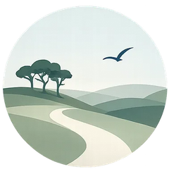

Parents’ evening coming up?
A few notes beforehand can help you leave with a clearer idea of what happens next.
1Say
2Ask
3Leave with
What support will be triedIn class, in a group or one to one
Who will arrange itA name, not just “school”
When you’ll review itOut of time? Ask for a follow-up chat
You’re not being a difficult parent by asking for clarity.